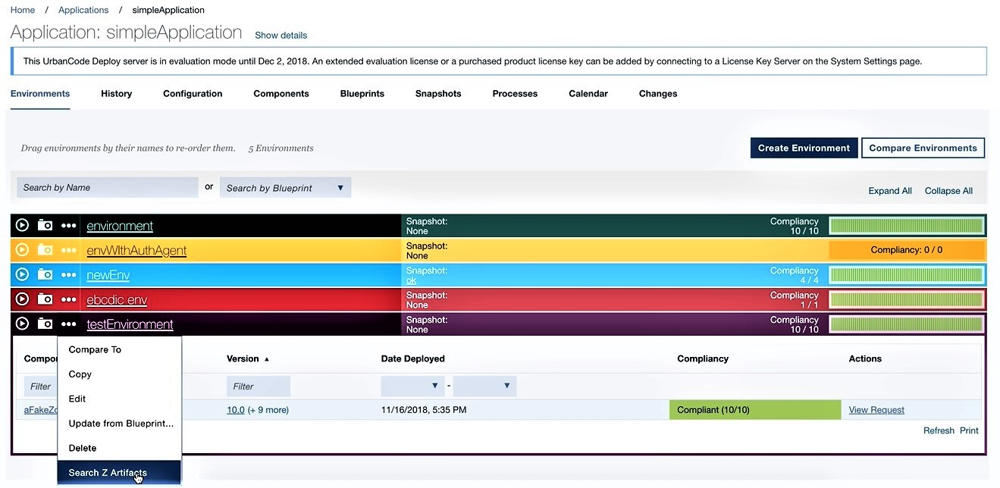

Searching the z/OS environment inventory
The z/OS search feature is available for any application that contains a z/OS type component. Search is performed for a specific file in the artifacts belonging to the z/OS components deployed to that environment.
Files in the z/OS environment can be identified with the Search Z Artifacts option available in the z/OS application environment.
- Navigate to the environment of interest (Applications > application name > Environments > Environment: environment name.
- From the Properties ellipsis for the environment, select Search Z Artifacts. 
- Enter the name of the file to search in the Search Z Artifacts dialog, then click Search. Results are returned in batches. A maximum of 1000 results are returned per batch, beginning with the most recent version deployed. If the file is not found in the most recent batch, a file not found message is displayed.
-
Select Search Earlier Inventory to return the next 1000 most recent instances of the file. Subsequent results can be returned until there are no more versions to search.
Note:
The batch size of returned results is configurable and can be changed by adding the property zos.search.batch.size=<number> to the servers installed.properties file.
The following information is presented for each batch returned in the search results.
|**Name**|The name of the file, as imported into CodeStation. The file names are group according to the PDS \(container\) on the mainframe where they are located.||Deploy Type|The type of resource the file was mapped to when deployed.| |Inputs|The inputs to the artifact (like copybooks) provided in the shiplist file.| |Component|The name of the component that belongs to the file.| |Version|The version the file was deployed in.| |Deployment Time|The calendar date and time the file was deployed as mm/dd/yyy and hh:mm (12-hour clock).|
Parent topic: Deploying to the z/OS platform